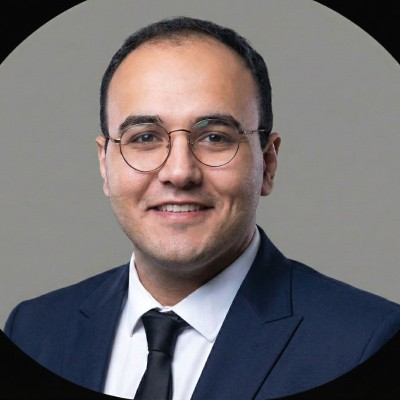

Kullanıcı ihtiyacı, veri kaynağı, etiket yapısı ve başarı metriğinin tanımı.

Ali Nebi ER
AI Developer · Computer Engineering
AI ENGINEERING · SOFTWARE · RESEARCH
Teknik proje
portföyü.
Model eğitiminden API tasarımına, gerçek zamanlı veri akışından güvenlik katmanına kadar; problemi çalışan bir sisteme dönüştürdüğüm 12 seçili teknik proje.
"engineer": "Ali Nebi ER", "focus": [ "Multimodal AI", "Computer Vision", "Agentic Systems" ], "builds": { "models": true, "apis": true, "products": true }
system.ready
12seçili teknik proje
07vitrin açık kaynak bağlantısı
05AI alanı
E2Euçtan uca yaklaşım
SELECTED ENGINEERING WORK / 01
En güçlü
12 proje.
Kartlar hızlı tarama için özetlenmiştir. Her projedeki “Teknik vakayı aç” düğmesi; problem, mimari akış, katkı, sonuç ve teknoloji yığınını ayrıntılı gösterir.
12 teknik proje gösteriliyor
Detaylar etkileşimli vaka görünümünde açılırBu filtre ve arama ile eşleşen proje bulunamadı.
PUBLIC ENGINEERING TRACE / 02
Kod, yazı
ve bağlantılar.
Portföydeki projelerin arkasındaki teknik izler GitHub’da, daha geniş teknoloji ve toplum okumaları Medium’da toplanıyor.
GitHub
TITANBGG
Açık kaynak depolar, AI prototipleri, full-stack denemeler ve araştırma kodları.
Depoları aç ↗ Medium @alinebier138Yapay zeka, teknoloji, toplum, tarih ve kişisel gözlem ekseninde yazılar.
Yazıları oku ↗ LinkedIn Ali Nebi ERStaj, araştırma, mentörlük, proje duyuruları ve profesyonel gelişim akışı.
Profili aç ↗ENGINEERING APPROACH / 03
Modelden ürüne
tek hat.
Portföyde yalnızca model isimleri yok. Veri, çıkarım, servis, arayüz, güvenlik ve gözlemlenebilirlik birlikte ele alınıyor.
Baseline, eğitim, hata analizi, sınıf bazlı metrikler ve açıklanabilirlik.
FastAPI servisleri, doğrulama, kimlik yönetimi, hata ve güvenlik katmanları.
Web/mobil arayüz, gerçek zamanlı akış, Docker ve yerel ya da bulut çıkarımı.
ARAŞTIRMA ÇİZGİSİ
Multimodal medikal yapay zeka
Göğüs röntgeni ve klinik metin temsillerini ViT, ClinicalBERT, late fusion ve cross-attention ile birleştiren FET’26 bildiri çalışması.
≈0.92 Late-fusion AUC14 CXR bulgusu
MÜHENDİSLİK İLKESİ
Doğrulanabilirlik, sınırlar ve dürüst statü
Akademik/prototip projeler üretim sistemi gibi sunulmaz. Sağlık modelleri klinik cihaz değildir; ölçümler proje deneylerine aittir.
28 SağlıkCebim test modülüLocal LLM gizliliği